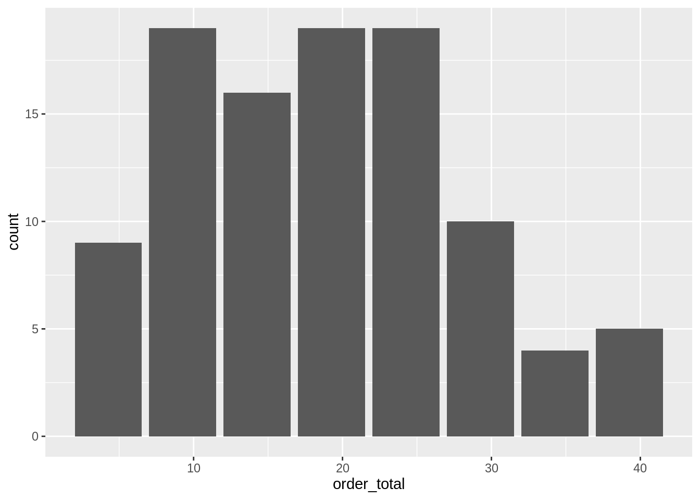
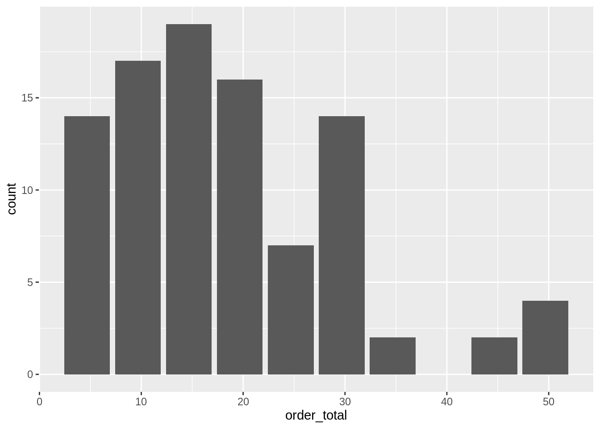

7 Modeling with databases
7.1 Single step sampling
Use PostgreSQL TABLESAMPLE clause
Use
connection_open()to open a Database connectionSet the
ordersvariable to point to the orders tableSet the
orders_viewvariable to point to the v_orders tablePipe
ordersinto the functionshow_query()## <SQL> ## SELECT * ## FROM datawarehouse.ordersPipe the previous command into the
class()function to see the kind of outputshow_query()returns## <SQL> ## SELECT * ## FROM datawarehouse.orders## [1] "tbl_conn" "tbl_PqConnection" "tbl_dbi" "tbl_sql" "tbl_lazy" "tbl"Replace
show_query()withremote_query()to compare the output types## [1] "sql" "character"Replace
class()withbuild_sql(). Useconas the value for theconargument## <SQL> SELECT * ## FROM datawarehouse.ordersAdd " TABLESAMPLE BERNOULLI (0.1)" to
build_sql()as another...argument## <SQL> SELECT * ## FROM datawarehouse.orders TABLESAMPLE BERNOULLI (0.1)Pipe the code into
tbl(). Useconfor theconargument, and.for the rest## # Source: SQL [?? x 3] ## # Database: postgres [rstudio_admin@localhost:5432/postgres] ## order_id customer_id step_id ## <int> <int> <dbl> ## 1 6544 36 6 ## 2 10969 69 10 ## 3 45368 4 45 ## 4 73207 23 73 ## 5 79874 71 79 ## 6 86553 69 86 ## 7 86559 48 86 ## 8 103209 58 103 ## 9 105466 2 105 ## 10 127623 81 127 ## # … with more rowsUse
inner_join()to add the information from theorders_viewpointer, useorder_idas the matching fieldorders %>% remote_query() %>% build_sql(con = con, " TABLESAMPLE BERNOULLI (0.1)") %>% tbl(con, .) %>% inner_join(orders_view, by = "order_id")## # Source: lazy query [?? x 12] ## # Database: postgres [rstudio_admin@localhost:5432/postgres] ## order_id customer_id.x step_id date date_year date_month customer_id.y customer_name customer_lon customer_lat order_total order_qty ## <int> <int> <dbl> <chr> <int> <int> <int> <chr> <dbl> <dbl> <dbl> <int> ## 1 2169 59 2 2016-01-02 2016 1 59 Junie Kuhlman -122. 37.8 34.8 5 ## 2 18762 84 18 2016-01-18 2016 1 84 Jep Greenfelder-Bayer -122. 37.8 18.4 3 ## 3 22115 50 22 2016-01-22 2016 1 50 Channing Pacocha -122. 37.7 17.3 3 ## 4 57682 6 57 2016-02-26 2016 2 6 Meggan Bruen -122. 37.7 21.4 3 ## 5 78727 84 78 2016-03-18 2016 3 84 Jep Greenfelder-Bayer -122. 37.8 10.6 2 ## 6 80958 9 80 2016-03-20 2016 3 9 Kip Eichmann -122. 37.7 25.6 4 ## 7 86568 68 86 2016-03-26 2016 3 68 Clement Haley -122. 37.8 28.3 4 ## 8 92136 9 92 2016-04-01 2016 4 9 Kip Eichmann -122. 37.7 47.7 6 ## 9 144316 70 144 2016-05-23 2016 5 70 Reggie Mills -122. 37.7 23.6 4 ## 10 152180 50 152 2016-05-31 2016 5 50 Channing Pacocha -122. 37.7 32.0 5 ## # … with more rowsAssign the resulting code to a variable
orders_sample_dbUse
collect()to load the results oforders_sample_dbto a new variable calledorders_sampleLoad the
dbplotlibraryUse
dbplot_histogram()to visualize the distribution oforder_totalfromorders_sample
Use
dbplot_histogram()to visualize the distribution oforder_totalfromorders_view
7.2 Using tidymodels for modeling
Fit and measure the model’s performance using functions from parsnip and yardstick
Load the
tidymodelslibraryStart with the
linear_reg()command, pipe intoset_engine(), and use “lm” as its sole argument## Linear Regression Model Specification (regression) ## ## Computational engine: lmPipe into the
fit()command. Use the formula:order_total ~ order_qty, andorders_sampleas thedataargument## parsnip model object ## ## Fit in: 26ms ## Call: ## stats::lm(formula = formula, data = data) ## ## Coefficients: ## (Intercept) order_qty ## -0.8562 7.0699Assign the previous code to a variable called
parsnip_modelUse
bind_cols()to add the predictions toorder_sample. Calculate the prediction withpredict()## # A tibble: 101 x 13 ## order_id customer_id.x step_id date date_year date_month customer_id.y customer_name customer_lon customer_lat order_total order_qty .pred ## <int> <int> <dbl> <chr> <int> <int> <int> <chr> <dbl> <dbl> <dbl> <int> <dbl> ## 1 8734 87 8 2016-01-08 2016 1 87 Lasonya Bailey-Langworth -122. 37.8 5.21 1 6.21 ## 2 24398 60 24 2016-01-24 2016 1 60 Jonas Abshire -122. 37.8 32.0 4 27.4 ## 3 32103 73 32 2016-02-01 2016 2 73 Merlyn Runolfsson -122. 37.7 20.9 3 20.4 ## 4 32158 80 32 2016-02-01 2016 2 80 Jessee Rodriguez Jr. -122. 37.7 8.34 1 6.21 ## 5 42123 61 42 2016-02-11 2016 2 61 Cedric O'Kon-Wisoky -122. 37.8 14.9 2 13.3 ## 6 46478 42 46 2016-02-15 2016 2 42 Rodolfo Denesik -122. 37.8 18.4 3 20.4 ## 7 50895 16 50 2016-02-19 2016 2 16 Mordechai Schultz -122. 37.7 26.2 4 27.4 ## 8 64366 26 64 2016-03-04 2016 3 26 Lura Koepp -122. 37.7 25.0 4 27.4 ## 9 67620 72 67 2016-03-07 2016 3 72 Eduardo Bins -122. 37.8 21.6 3 20.4 ## 10 69842 43 69 2016-03-09 2016 3 43 Chadrick Konopelski -122. 37.7 26.0 3 20.4 ## # … with 91 more rowsPipe the code into the
metrics()function. Useorder_totalas thetruthargument, and.predas theestimateargumentorders_sample %>% bind_cols(predict(parsnip_model, orders_sample)) %>% metrics(truth = order_total, estimate = .pred)## # A tibble: 3 x 3 ## .metric .estimator .estimate ## <chr> <chr> <dbl> ## 1 rmse standard 2.64 ## 2 rsq standard 0.926 ## 3 mae standard 2.07
7.3 Score with tidypredict
Load the
tidypredictlibraryUse the
parse_model()function to parseparsnip_model, and assign it to a variable calledparsed_parsnipUse
str()to see theparsed_parsnipobject’s structure## List of 2 ## $ general:List of 6 ## ..$ model : chr "lm" ## ..$ version : num 2 ## ..$ type : chr "regression" ## ..$ residual: int 99 ## ..$ sigma2 : num 7.13 ## ..$ is_glm : num 0 ## $ terms :List of 2 ## ..$ :List of 5 ## .. ..$ label : chr "(Intercept)" ## .. ..$ coef : num -0.856 ## .. ..$ is_intercept: num 1 ## .. ..$ fields :List of 1 ## .. .. ..$ :List of 2 ## .. .. .. ..$ type: chr "ordinary" ## .. .. .. ..$ col : chr "(Intercept)" ## .. ..$ qr :List of 2 ## .. .. ..$ qr_1: num -0.0995 ## .. .. ..$ qr_2: num 0.237 ## ..$ :List of 5 ## .. ..$ label : chr "order_qty" ## .. ..$ coef : num 7.07 ## .. ..$ is_intercept: num 0 ## .. ..$ fields :List of 1 ## .. .. ..$ :List of 2 ## .. .. .. ..$ type: chr "ordinary" ## .. .. .. ..$ col : chr "order_qty" ## .. ..$ qr :List of 2 ## .. .. ..$ qr_1: num 0 ## .. .. ..$ qr_2: num -0.0754 ## - attr(*, "class")= chr [1:3] "parsed_model" "pm_regression" "list"Use
tidypredict_fit()to view thedplyrformula that calculates the prediction## -0.856204588910169 + (order_qty * 7.06989483747611)Use
head()to get the first 10 records fromorders_view## # Source: lazy query [?? x 10] ## # Database: postgres [rstudio_admin@localhost:5432/postgres] ## order_id date date_year date_month customer_id customer_name customer_lon customer_lat order_total order_qty ## <int> <chr> <int> <int> <int> <chr> <dbl> <dbl> <dbl> <int> ## 1 1001 2016-01-01 2016 1 36 Jeptha Ziemann -122. 37.7 10.9 2 ## 2 1002 2016-01-01 2016 1 21 Miss Azzie Jaskolski -122. 37.8 29.4 4 ## 3 1003 2016-01-01 2016 1 64 Amber Harber -122. 37.8 31.0 5 ## 4 1004 2016-01-01 2016 1 85 Mat Luettgen -122. 37.8 42 6 ## 5 1005 2016-01-01 2016 1 41 Dr. Dionte Quigley Jr. -122. 37.8 27.2 4 ## 6 1006 2016-01-01 2016 1 70 Reggie Mills -122. 37.7 12.7 2 ## 7 1007 2016-01-01 2016 1 10 Ms. Ciarra Borer -122. 37.8 11.3 2 ## 8 1008 2016-01-01 2016 1 78 Pricilla Goodwin -122. 37.8 5.47 1 ## 9 1009 2016-01-01 2016 1 56 Kimora Bergnaum -122. 37.7 19.9 3 ## 10 1010 2016-01-01 2016 1 71 Erle Christiansen-Larkin -122. 37.7 18.6 3Pipe the code into
mutate(). Assign to a newmy_predvariable the results oftidypredict_fit(). Make sure to prefixtidypredict_fit()with the bang-bang operator so that the formula is evaluated.## # Source: lazy query [?? x 11] ## # Database: postgres [rstudio_admin@localhost:5432/postgres] ## order_id date date_year date_month customer_id customer_name customer_lon customer_lat order_total order_qty my_pred ## <int> <chr> <int> <int> <int> <chr> <dbl> <dbl> <dbl> <int> <dbl> ## 1 1001 2016-01-01 2016 1 36 Jeptha Ziemann -122. 37.7 10.9 2 13.3 ## 2 1002 2016-01-01 2016 1 21 Miss Azzie Jaskolski -122. 37.8 29.4 4 27.4 ## 3 1003 2016-01-01 2016 1 64 Amber Harber -122. 37.8 31.0 5 34.5 ## 4 1004 2016-01-01 2016 1 85 Mat Luettgen -122. 37.8 42 6 41.6 ## 5 1005 2016-01-01 2016 1 41 Dr. Dionte Quigley Jr. -122. 37.8 27.2 4 27.4 ## 6 1006 2016-01-01 2016 1 70 Reggie Mills -122. 37.7 12.7 2 13.3 ## 7 1007 2016-01-01 2016 1 10 Ms. Ciarra Borer -122. 37.8 11.3 2 13.3 ## 8 1008 2016-01-01 2016 1 78 Pricilla Goodwin -122. 37.8 5.47 1 6.21 ## 9 1009 2016-01-01 2016 1 56 Kimora Bergnaum -122. 37.7 19.9 3 20.4 ## 10 1010 2016-01-01 2016 1 71 Erle Christiansen-Larkin -122. 37.7 18.6 3 20.4Replace the
mutate()command withtidypredict_to_column()## # Source: lazy query [?? x 11] ## # Database: postgres [rstudio_admin@localhost:5432/postgres] ## order_id date date_year date_month customer_id customer_name customer_lon customer_lat order_total order_qty fit ## <int> <chr> <int> <int> <int> <chr> <dbl> <dbl> <dbl> <int> <dbl> ## 1 1001 2016-01-01 2016 1 36 Jeptha Ziemann -122. 37.7 10.9 2 13.3 ## 2 1002 2016-01-01 2016 1 21 Miss Azzie Jaskolski -122. 37.8 29.4 4 27.4 ## 3 1003 2016-01-01 2016 1 64 Amber Harber -122. 37.8 31.0 5 34.5 ## 4 1004 2016-01-01 2016 1 85 Mat Luettgen -122. 37.8 42 6 41.6 ## 5 1005 2016-01-01 2016 1 41 Dr. Dionte Quigley Jr. -122. 37.8 27.2 4 27.4 ## 6 1006 2016-01-01 2016 1 70 Reggie Mills -122. 37.7 12.7 2 13.3 ## 7 1007 2016-01-01 2016 1 10 Ms. Ciarra Borer -122. 37.8 11.3 2 13.3 ## 8 1008 2016-01-01 2016 1 78 Pricilla Goodwin -122. 37.8 5.47 1 6.21 ## 9 1009 2016-01-01 2016 1 56 Kimora Bergnaum -122. 37.7 19.9 3 20.4 ## 10 1010 2016-01-01 2016 1 71 Erle Christiansen-Larkin -122. 37.7 18.6 3 20.4Load the
yamllibraryUse
write_yaml()to save the contents ofparsed_parsnipinto a file called model.yamlUsing
read_yaml(), read the contents of the model.yaml file into the a new variable calledloaded_modelUse
as_parsed_model()to convert theloaded_modelvariable into atidypredictparsed model object, assign the results toloaded_model_2
7.4 Run predictions in DB
Load the
modeldblibraryUse
select()to pick theorder_totalandorder_qtyfields from theorders_sample_dbtable pointer## # Source: lazy query [?? x 2] ## # Database: postgres [rstudio_admin@localhost:5432/postgres] ## order_total order_qty ## <dbl> <int> ## 1 13.3 2 ## 2 16.9 3 ## 3 43.4 5 ## 4 54.0 7 ## 5 54.0 7 ## 6 23.7 3 ## 7 14.5 2 ## 8 36.9 6 ## 9 12.3 2 ## 10 24.2 4 ## # … with more rowsPipe the code into the
linear_regression_db()function, passorder_totalas the only argument## # A tibble: 1 x 2 ## `(Intercept)` order_qty ## <dbl> <dbl> ## 1 -0.391 6.85Assign the model results to a new variable called
db_modelUse
as_parsed_model()to convertdb_modelto a parsed model object. Assign to new a variable calledpmUse
head()to get the top 10 records, and then pipe intotidypredict_to_column()to add the results frompm## # Source: lazy query [?? x 11] ## # Database: postgres [rstudio_admin@localhost:5432/postgres] ## order_id date date_year date_month customer_id customer_name customer_lon customer_lat order_total order_qty fit ## <int> <chr> <int> <int> <int> <chr> <dbl> <dbl> <dbl> <int> <dbl> ## 1 1001 2016-01-01 2016 1 36 Jeptha Ziemann -122. 37.7 10.9 2 13.4 ## 2 1002 2016-01-01 2016 1 21 Miss Azzie Jaskolski -122. 37.8 29.4 4 27.2 ## 3 1003 2016-01-01 2016 1 64 Amber Harber -122. 37.8 31.0 5 34.1 ## 4 1004 2016-01-01 2016 1 85 Mat Luettgen -122. 37.8 42 6 40.9 ## 5 1005 2016-01-01 2016 1 41 Dr. Dionte Quigley Jr. -122. 37.8 27.2 4 27.2 ## 6 1006 2016-01-01 2016 1 70 Reggie Mills -122. 37.7 12.7 2 13.4 ## 7 1007 2016-01-01 2016 1 10 Ms. Ciarra Borer -122. 37.8 11.3 2 13.4 ## 8 1008 2016-01-01 2016 1 78 Pricilla Goodwin -122. 37.8 5.47 1 6.55 ## 9 1009 2016-01-01 2016 1 56 Kimora Bergnaum -122. 37.7 19.9 3 20.3 ## 10 1010 2016-01-01 2016 1 71 Erle Christiansen-Larkin -122. 37.7 18.6 3 20.3